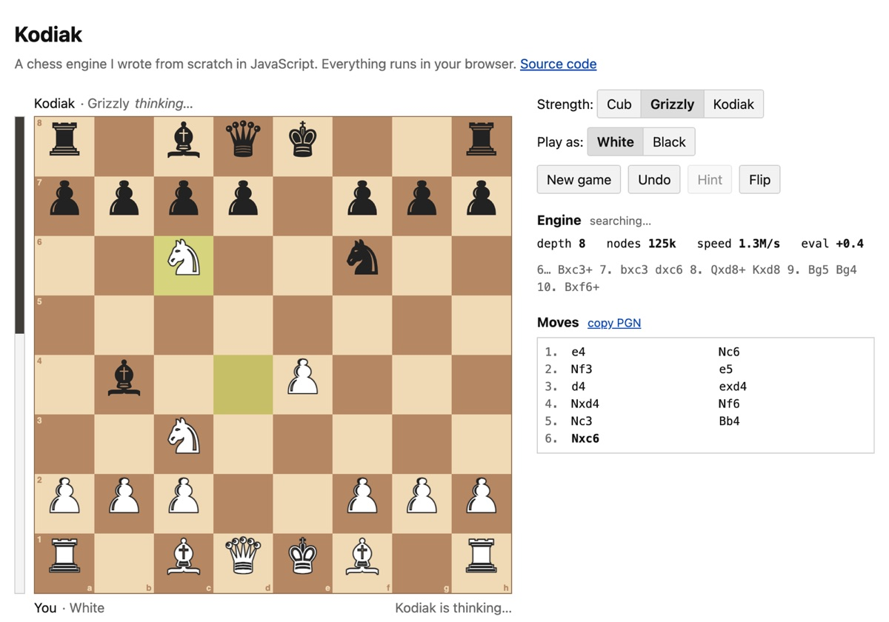
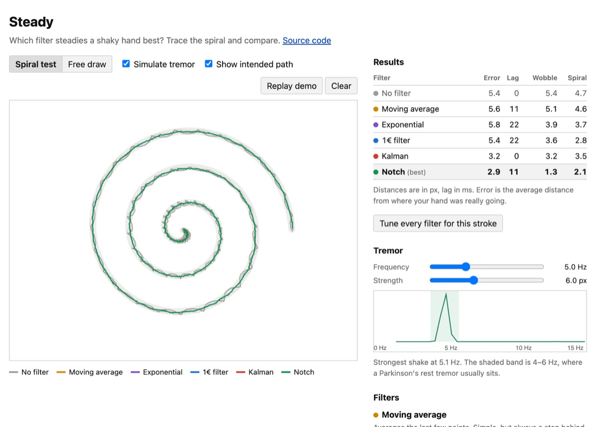
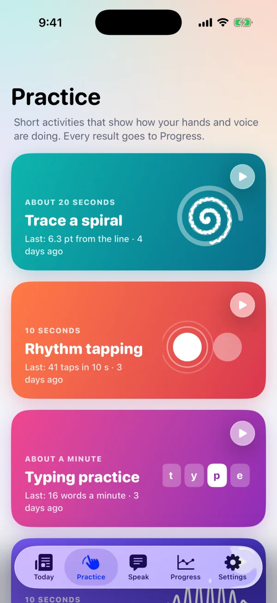
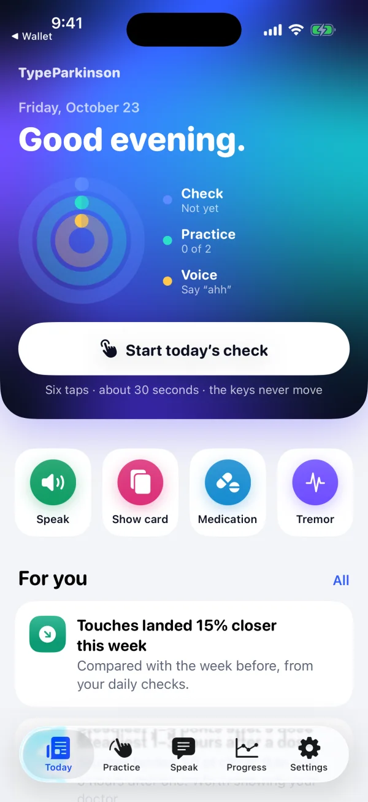
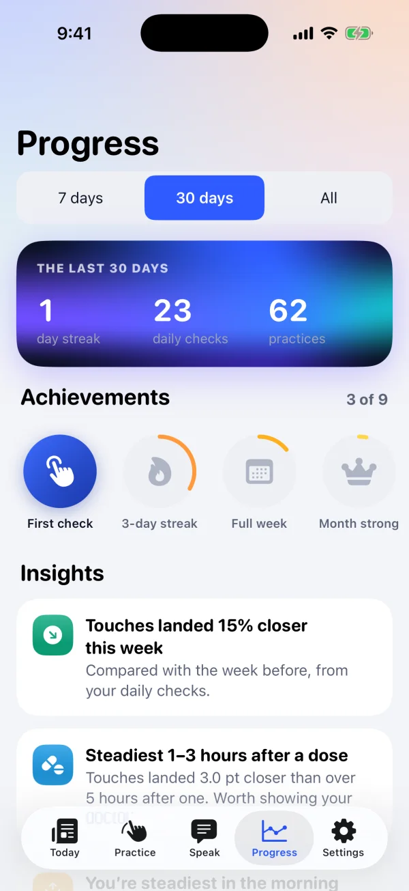
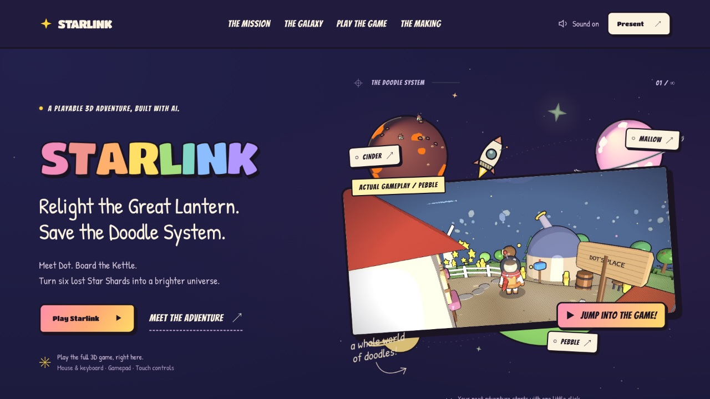

Hi! I'm a student and I like making things you can actually try. Most of the stuff below runs in your browser, so click around.
Right now I'm working on TypeParkinson with Pranav Atreya for the Congressional App Challenge. It's a keyboard for people with Parkinson's that adjusts to how their hands actually move.
Code is on GitHub: github.com/BurTheBear
A chess engine I wrote from scratch in JavaScript, with no libraries. It uses alpha-beta search, a transposition table and the usual tricks. In a test match against Stockfish set to 1500 Elo it won 18 of 20 games. The move generator is checked against known perft counts every time I push.

A spin-off from TypeParkinson. You draw with a fake tremor and compare five filters that try to smooth it out. Most of them barely help, because the lag they add costs about as much as the shake. A notch filter tuned to the tremor's frequency cut the error by more than half.

An iPhone app with its own system keyboard. It learns where your touches land, builds the keyboard around that, and fixes typos using Bayes' rule. It also has a tremor meter, a spiral test, medication reminders, and a report you can share with your doctor. It never claims to diagnose anything.



A website with a whole 3D game inside it. You fly a kettle-shaped rocket between little doodle planets. This one was a challenge to build a game where AI writes the code. I came up with the world and the design and did a lot of playtesting.

A basketball coaching game. You get three seasons to win State: recruit, run practices, then play the games on a 3D court. It's a single HTML file and works offline.
An app for small favors: post something that takes 5 to 30 minutes, and someone nearby picks it up. It has a React Native app, an Express and Postgres backend, realtime chat, XP and streaks for volunteers, and an admin dashboard.
A 2D Godot game for FBLA. You go back to the 1910s and do quests for historical figures, across levels set in the Mexican Revolution, the Titanic and Henry Ford's factory.
Also in progress: a chessboard reader for Ray-Ban Meta glasses. It uses computer vision and follows a real game move by move. Not public yet.
Swift and SwiftUI, JavaScript and TypeScript, Python, Godot, three.js, React Native, Postgres, Docker and Blender.
Last updated October 2026.